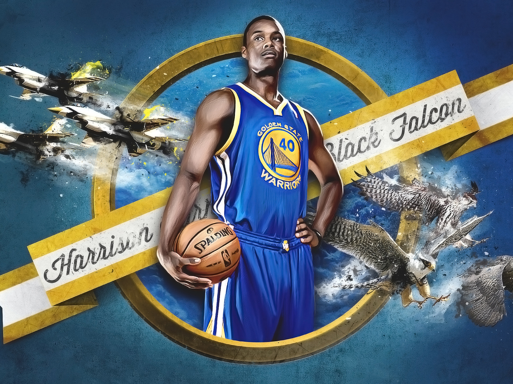

Steph Curry reached the mark in the 10 000 points in a career.
Take 37 points in a regular season NBA "San Antonio Spers», quarterback" Golden State Warriors» Steph Curry led the total number to 10 015 for career.
The jubilee line Steff obeys the 459 matches. The meeting ended with a victory by're the warriors with a score of 120, 90, curry became the most successful player of the game.
This article details the history of the Golden State Warriors. The history of the Warriors began in Philadelphia in 1946. In 1962, the franchise was relocated to San Francisco, California and became known as the San Francisco Warriors until 1971, when its name was changed to the current Golden State Warriors. Along with their inaugural championship win in the 1946–47 season, the Warriors have won four others in the team's history, including another in Philadelphia after the 1955–56 season, and three more as Golden State after the 1974–75, 2014–15 and 2016–17 seasons.
Wardell Stephen Curry II (born March 14, 1988), known as Stephen Curry or Steph Curry, is an American professional basketball player for the Golden State Warriors of the National Basketball Association (NBA). Many players and analysts have called him the greatest shooter in NBA history.In 2014–15, Curry won the NBA Most Valuable Player Award and led the Warriors to their first championship since 1975. The following season, he became the first player in NBA history to be elected MVP by a unanimous vote and to lead the league in scoring while shooting above 50–40–90. That same year, the Warriors broke the record for the most wins in an NBA season. Curry helped the Warriors return to the NBA Finals for a third straight year in 2017, winning his second NBA championship.
SKevin Wayne Durant (born September 29, 1988) is an American professional basketball player who last played for the Golden State Warriors of the National Basketball Association (NBA). Durant has won an NBA Most Valuable Player Award, NBA Finals MVP Award, NBA All-Star Game MVP, four NBA scoring titles, the NBA Rookie of the Year Award, and two Olympic gold medals. He has also been selected to seven All-NBA teams and eight All-Star teams. He won his first NBA Championship as a member of the Golden State Warriors in the 2016–17 season.
Zaza Pachulia ( February 10, 1984) is a Georgian professional basketball player for the Golden State Warriors of the National Basketball Association (NBA). He was born as Zaur Pachulia, but his first name was legally changed to Zaza.In 2017, Pachulia won his first NBA Championship as a member of the Warriors.